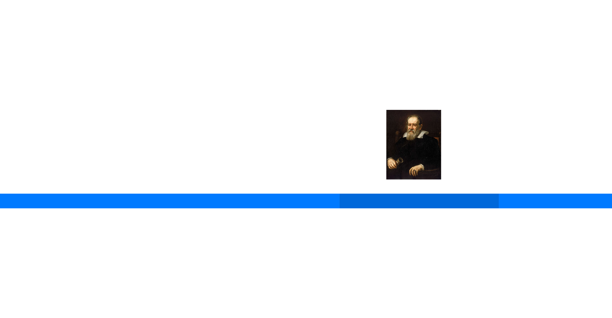

Life Of Galileo Galilei

Feb. 15, 1564
Born
Sep.5 1581
Enrolls in the University of Pisa
1583
Observed the isochronism of a chandelier and invented the pendulum
1586
Published a book about his hydrostatic balance
1588
Get a job as a teacher
1589
Become a mathematics chair
1591
Galileo's father died
1593
Invents a water pump driven by horses
1613
Start To Support Heliocentric, which suggested that the sun is in the central of the universe
1606
Invents the thermoscope, the primitive thermometer
Jun 1609
Invented the telescope and magnified the power of the lens by 30
Nov.1 1609
Discovers the Moon has craters on it. He measured the heights of the mountains based on their shadows
21 Nov 1609
Discovered the Milky Way was made up of stars too far away to be seen by the naked eye
Jan.7 1610
Discovered Ganymede, the largest Moon of Jupiter which supported the Copernican model
Jan.13 1610
Discovered the four satellites orbiting Jupiter
May.1 1611
Observed sunspots moving, which led him to the conclusion that the sun rotates on its own axis
1613
Start To Support Heliocentric, which suggested that the sun is in the central of the universe
Jan.1 1616
Wrote his theory on tides
1632
Galileo's Dialogue Concerning the Two Chief World Systems is published
1638
Galileo's Two Sciences is published in Holland and is now called the kinematics and strength of materials
Galileo & the Renaissance

When did Galileo Galilei Apears on in the renaissance